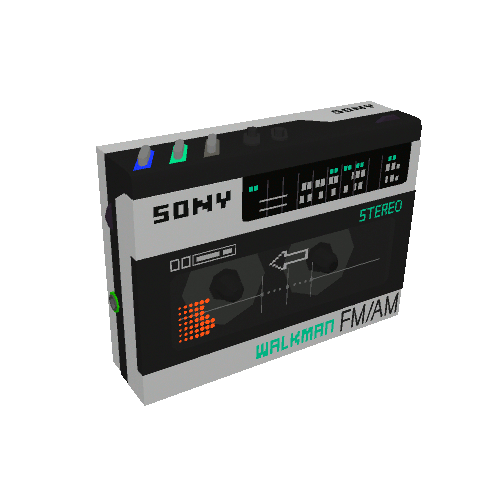
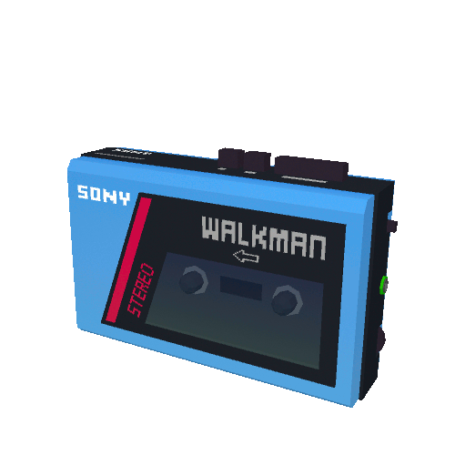

__ .__
__ __ ____ _____ ______ _____/ |_| |__ ____ ____ _____ _______ ___.__.
| | \/ \\__ \ \____ \ / _ \ __\ | \_/ __ \_/ ___\\__ \\_ __ < | |
| | / | \/ __ \| |_> > <_> ) | | Y \ ___/\ \___ / __ \| | \/\___ |
|____/|___| (____ / __/ \____/|__| |___| /\___ >\___ >____ /__| / ____|
\/ \/|__| \/ \/ \/ \/ \/
click here to add songs!
my favorite way to sort music is by release date. here are all my songs sorted by the decade they were released.
here are some songs from above sorted into certain genres/moods/vibes.
click here to go home.
this is my collection of all my favorite music...
enjoy >:)

click here to follow me <3

SomaFM: radio stations with several different genres.
Nightride FM: synthwave radio.
Rekt Network: cyberpunk radio.
Nightwave Plaza: vaporwave radio.
Vaporwave Archive: vaporwave music player.
Poolsuite: electronic music player with cool aesthetics. plays from SoundCloud playlists.
radio.garden: listen to radio stations all over the world.
Radiooooo: simulate radio stations from certain decades.